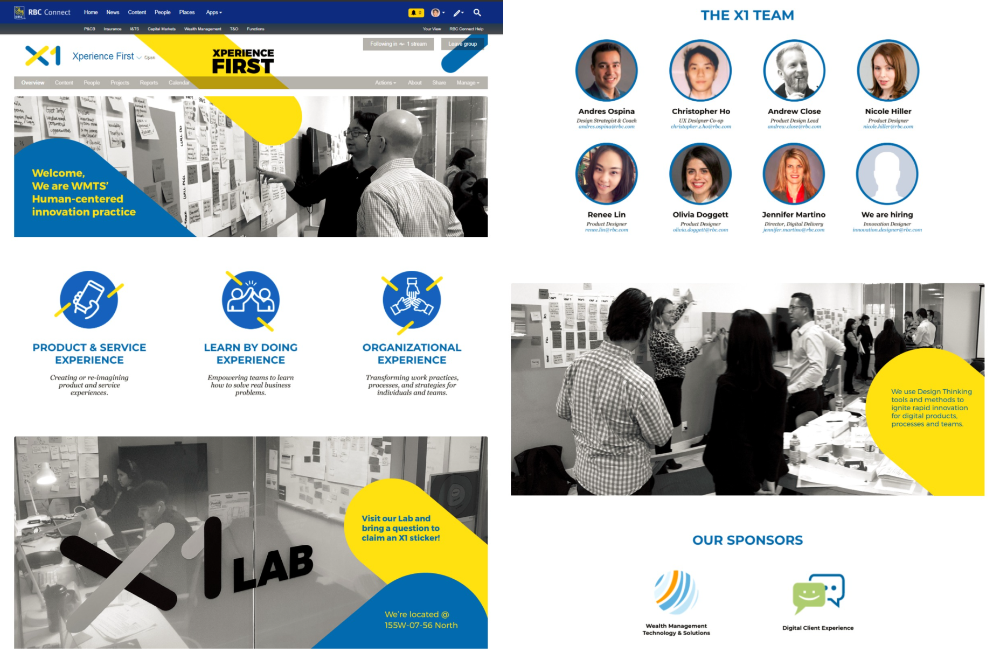
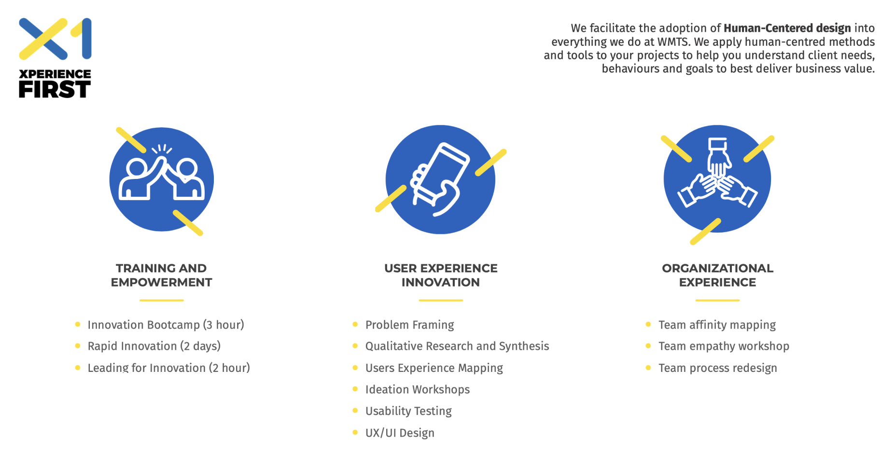
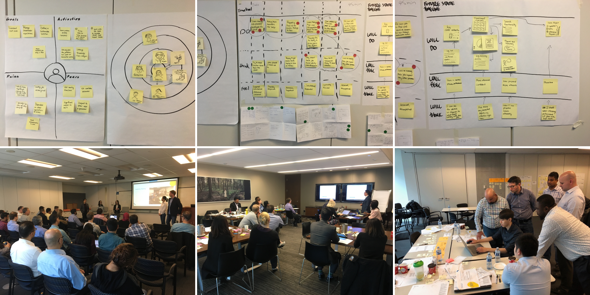

Context
I was part of Xperience First, the new design CoE within RBC Wealth
Management. Our goal was to facilitate the adoption of human-centred
design into Wealth Management Technology & Solutions.
Due to an NDA, I'm not allowed to display mockups, prototypes, and
designs I worked on regarding internal RBC projects. Instead, I will be
summarizing my work and learnings during my internship.
Promoting Xperience First
Established in December 2017, Xperience First was relatively unknown
within RBC when I began my internship. To raise awareness about our team
and the services we provided, I designed and developed Xperience First's
first intranet site, available for all RBC employees to view through
RBC's social platform. It began with simple paper and pen wireframes,
then progressed to mockups, and finally to HTML/CSS.

Wire Transfer Redesign (NDA)
A major product our team worked on was the redesign of an internal wire
transfer application. We were responsible for improving the UI/UX, and
overall process, as well as ensuring user adoption.
To start, we needed to fully understand the application's purpose, how
it was used, and its current problems. We conducted ten interviews with
end-users, learning about every touch point and pain point. Five
personas and user journey maps were formed from the collected data,
establishing empathy, and allowing us to truly understand the problem
space. Additional information was gathered from talking with subject
matter experts and application specialists.
Key Insights
-
The current payments process was highly tedious
-
Several manual touch points were required for every transaction
-
Multiple quality checks and reworks were required to mitigate risks
Multiple benchmarks for the future state regarding risk reduction,
efficiency, and the overall user experience were formed from end-users'
expectations of future features (ex. simplified screens, improved UI
navigation, single sign-on, etc).
The redesign began by conducting a two-day workshop with end-users and
stakeholders. We rapidly designed mockups and put together a
high-fidelity prototype that was usability tested with six end-users who
provided feedback accordingly.
Key Insights
-
Auto-populated fields were valuable for saving time, reducing
cognitive load, and checking accuracy
-
Users desired easy ways to keep file records, retrieve order details,
and share details with stakeholders
-
Labels needed to be more specific and provide more context
Considering this data as well as stakeholder opinions of the prototype,
several design changes were made. After iterating, the solution was
usability tested once again. The results, observations, and top findings
from the tests were consolidated into a report and presented to the
stakeholders. Once the product was approved, it was handed off for
development.
Design Thinking Workshops
Besides designing digital applications, our team also facilitated design
thinking workshops for RBC employees. The goal was to teach
multidisciplinary teams how to utilize design thinking in their own
jobs. Designers aren't the only ones who can utilize design methods and
we wanted to emphasize that.

During these workshops, we would present a real business problem to
several teams and ask them to create a solution. To get them started, we
would guide them through a condensed design sprint. The teams would
spend a day experimenting with empathy mapping, user eco-system mapping,
client journey mapping, forming HMW statements, and ideating. Each team
would sketch their solution as wireframes and I would rapidly design
mockups and a prototype accordingly.

Following this, an end-user would usability test each solution and
provide feedback. Changes would be made accordingly and each team would
present their solution to the workshop sponsors/stakeholders. By the
end, each attendee would leave with new problem solving skills that they
could apply to their jobs.